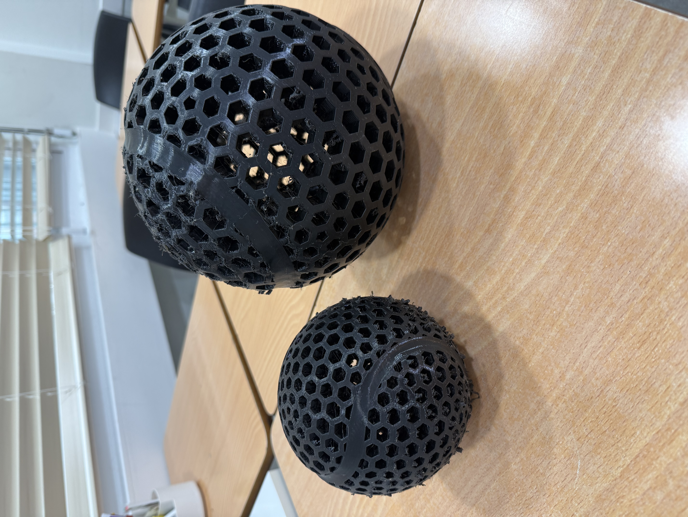
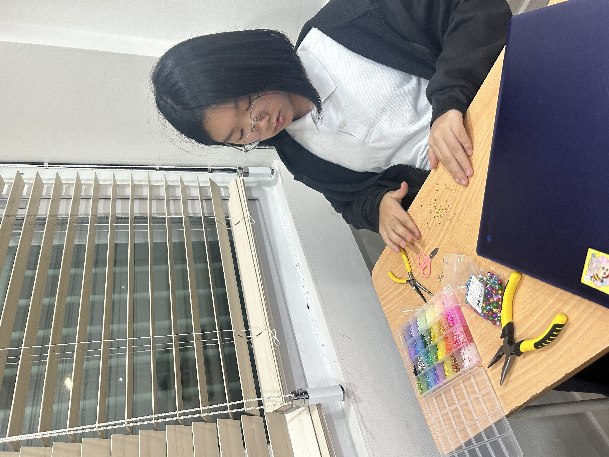
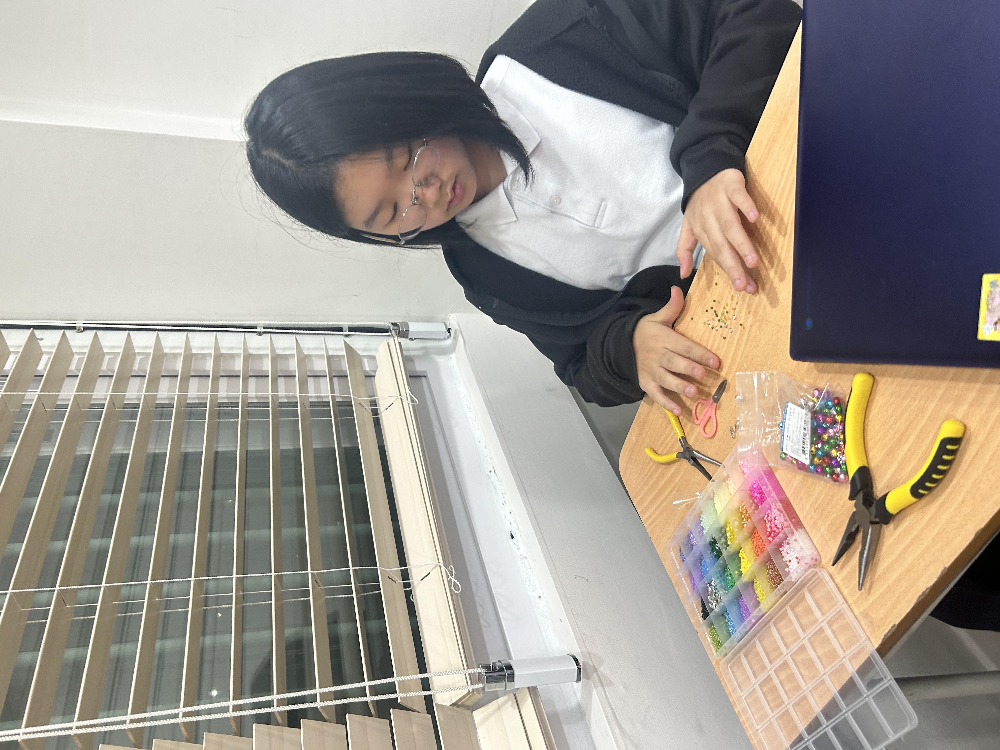
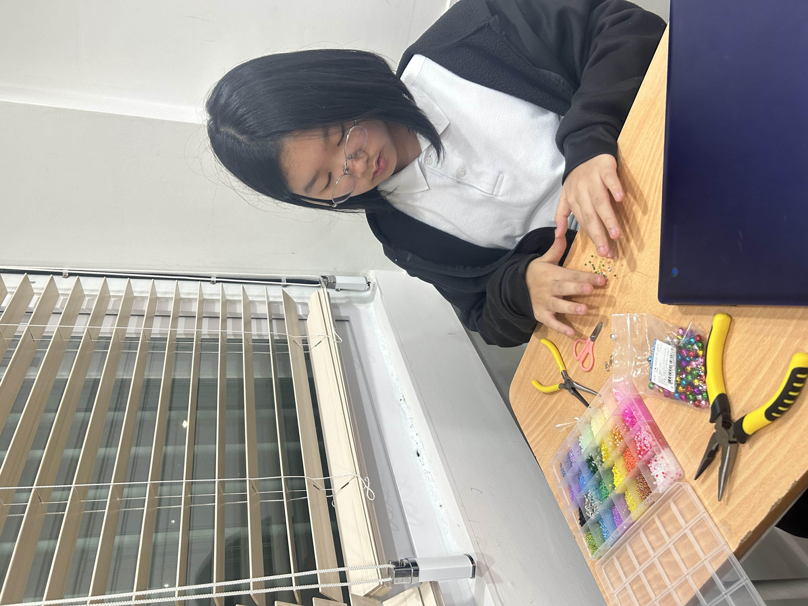
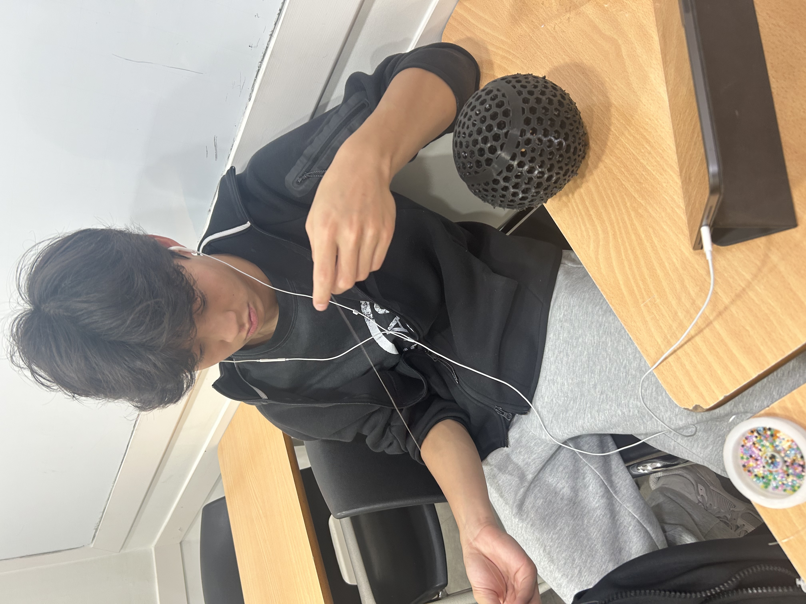
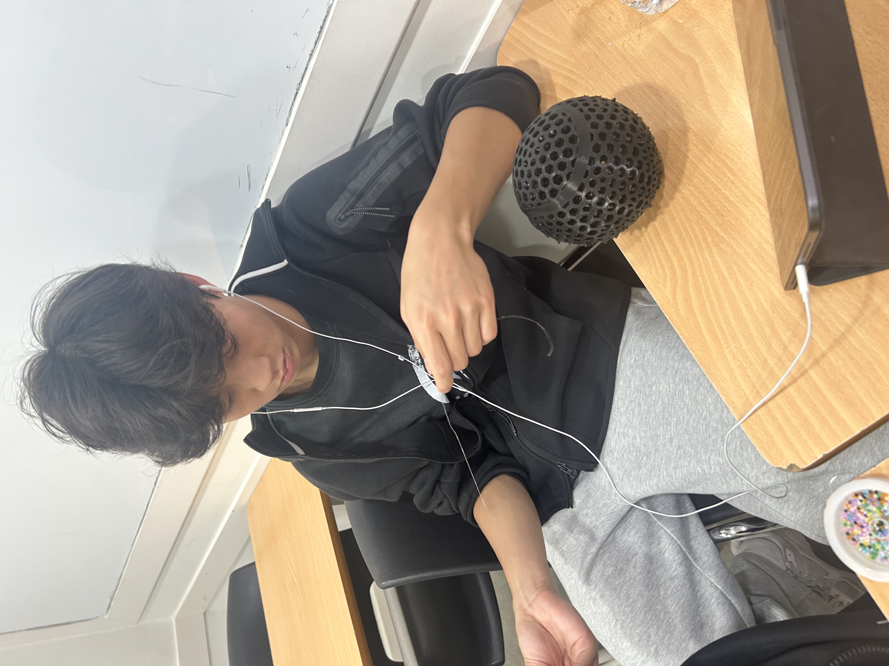
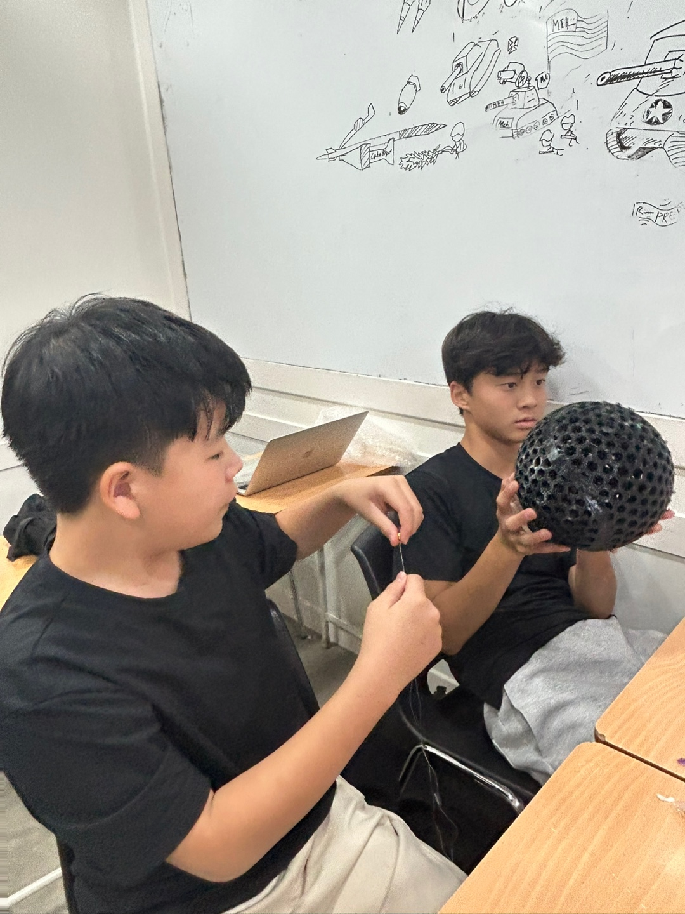
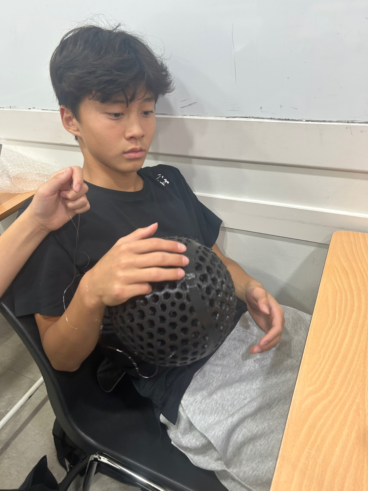
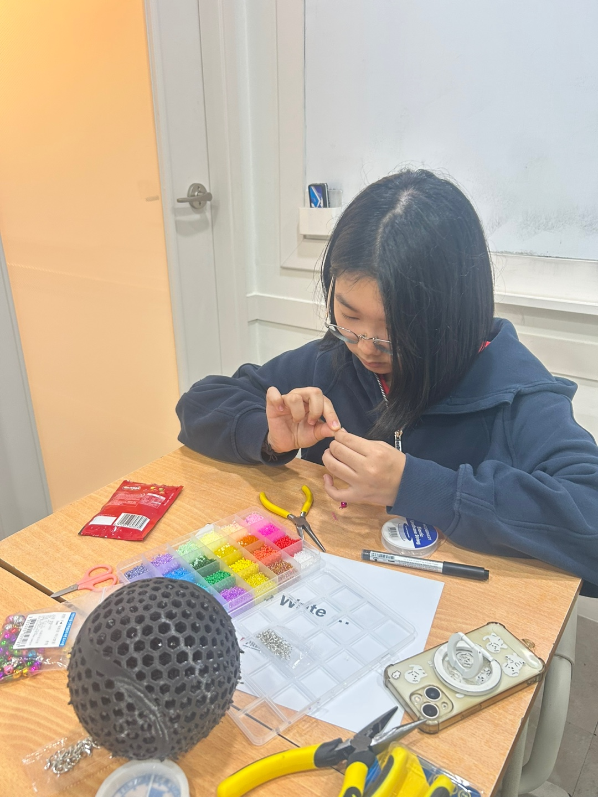

CONRAD CHALLENGE 2026
우리의 시작
시선 (視線)
세상을 다르게 보는 아이들의 이야기



왜 시각장애인을 돕고 싶은가?
스포츠 접근성 부재 → 신체 비활동 → 삶의 질·기대수명 저하
53%
UK 시각장애인 중 주 30분 미만 운동 (비활동)
일반 인구 27% 대비 2배 — RNIB, 2023
일반 인구 27% 대비 2배 — RNIB, 2023
21.7%
아일랜드 시각장애 성인 중 WHO 신체활동 기준 충족
일반인 41% 대비 절반 이하 — Vision Sports Ireland, 2024
일반인 41% 대비 절반 이하 — Vision Sports Ireland, 2024
~1.9×
시각장애인의 사망 위험 비율 (Hazard Ratio)
비시각장애인 대비 — BMJ systematic review, 2020
비시각장애인 대비 — BMJ systematic review, 2020
운동 기준 충족률 비교 (%)
신체 비활동 비율 비교 (%)
아동 체육 미참여율 (%)
Sources: RNIB (2023) · Vision Sports Ireland (2024) · AFB / NFB (2022) · BMJ systematic review (2020)
그렇게 시작 된 우리의 여정
소리나는 농구공을 만들어 보자 🏀





활동을 하며 우리가 배운것들

⚙️ Engineering Skills
소리센서, 회로 설계, 3D 프린팅… 실제로 손으로 만들며 공학적 사고를 배웠습니다.

💡 Innovative Ideas
"당연한 것"을 의심하고, 없던 것을 새롭게 설계하는 혁신적 사고를 훈련했습니다.

🤝 Empathy
시각장애인의 입장에서 세상을 바라보며 진짜 문제를 찾는 공감 능력을 키웠습니다.
"Engineering without empathy is just machinery.
Innovation without purpose is just noise.
— So why do we need all three?"
제품을 만들고
우리는 더 큰 impact를 향해..
소리나는 농구공 하나로 시작된 아이디어는, 시각장애인이 스포츠를 즐기는 방식을 바꾸는 더 큰 질문이 되었습니다.
첫 번째 프로토타입
소리와 진동 피드백이 결합된 농구공 개념 설계 및 기초 회로 제작
진짜 문제 발견
농구공을 넘어 — 시각장애인이 운동 자체에서 배제되는 구조적 문제 인식
더 큰 impact로
특정 제품이 아닌 — 시각장애인이 모든 스포츠에 참여할 수 있는 혁신 모델로
우리의 다음 질문:
어떤 스포츠가 시각장애인에게 가장 큰 변화를 만들 수 있을까?

앞으로 해 볼것들...
Conrad Challenge를 향한 본격적인 탐구의 시작
"The best innovations start with the best questions. — We're just getting started."